¿Qué es Redes?
Las redes son sistemas de interconexión de dispositivos informáticos que permiten la comunicación y el intercambio de información entre ellos. Estos dispositivos se comunican entre sí a través de medios de transmisión, como cables o conexiones inalámbricas, y utilizan protocolos de red para establecer reglas y estándares para la comunicación.

La redes se le puede entender como cosas conectadas. Por ejemplo, su círculo de amistades: todos están conectados debido a intereses, pasatiempos, habilidades y tipos similares.
Las redes se pueden encontrar en todos los ámbitos de la vida:
- El sistema de transporte público de una ciudad.
- Infraestructura como la red eléctrica nacional para la electricidad.
- Conocer y saludar a sus vecinos
- Sistemas postales para el envío de cartas y paquetes.
Pero más específicamente, en informática, la creación de redes es la misma idea, solo que dispersa a los dispositivos tecnológicos. Tome su teléfono como ejemplo; la razón por la que lo tienes es para acceder a las cosas. Cubriremos cómo estos dispositivos se comunican entre sí y las reglas que siguen.
En informática, una red puede estar formada por 2 dispositivos hasta miles de millones. ¡Estos dispositivos incluyen todo, desde su computadora portátil y teléfono hasta cámaras de seguridad, semáforos e incluso agricultura! Las redes están integradas en nuestra vida cotidiana. Ya sea recopilando datos meteorológicos, suministrando electricidad a los hogares o incluso determinando quién tiene el derecho de paso en una carretera. Debido a que las redes están tan integradas en la actualidad, las redes son un concepto esencial para comprender la ciberseguridad. Tome el siguiente diagrama como ejemplo, ¡Alice, Bob y Jim han formado su red! Llegaremos a esto un poco más adelante.
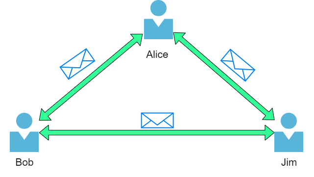¿Que es la Internet?
Ahora que hemos aprendido qué es una red y cómo se define en informática (solo dispositivos conectados), exploremos Internet.
Internet es una red gigante que consta de muchas, muchas redes pequeñas dentro de sí misma. Usando nuestro ejemplo de la tarea anterior, imaginemos ahora que Alice hizo nuevos amigos llamados Zayn y Toby que quiere presentarles a Bob y Jim. El problema es que Alice es la única persona que habla el mismo idioma que Zayn y Toby. ¡Así que Alice tendrá que ser la mensajera!.
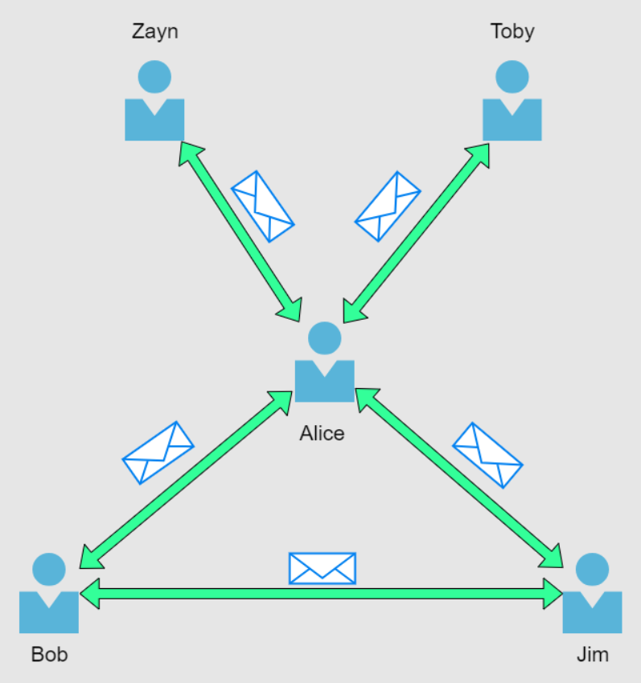Debido a que Alice puede hablar ambos idiomas, pueden comunicarse entre sí a través de Alice, formando una nueva red.
La primera iteración de Internet fue dentro del proyecto ARPANET a fines de la década de 1960.Este proyecto fue financiado por el Departamento de Defensa de los Estados Unidos y fue la primera red documentada en acción. Sin embargo, no fue hasta 1989 cuando Tim Berners-Lee inventó Internet, tal como la conocemos, con la creación de W orld W ide W eb (WWW).No fue hasta este punto que Internet comenzó a usarse como un repositorio para almacenar y compartir información, tal como se hace hoy.
Relacionemos la red de amigos de Alice con los dispositivos informáticos.Internet parece una versión mucho más grande de este tipo de diagrama:
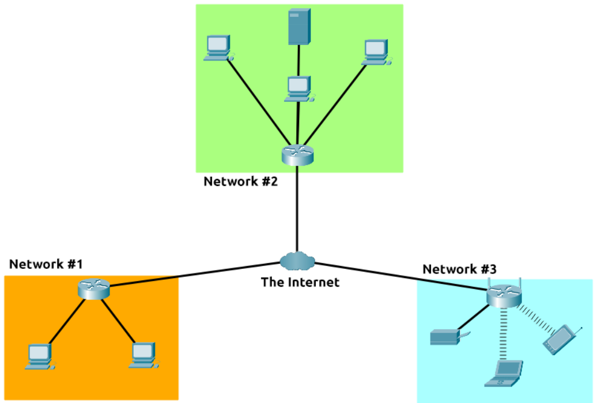
Como se indicó anteriormente, Internet se compone de muchas redes pequeñas, todas unidas. Estas pequeñas redes se denominan redes privadas, mientras que las redes que conectan estas pequeñas redes se denominan redes públicas, ¡o Internet! Entonces, para recapitular, una red puede ser de dos tipos:
- Una red privada
- Una red pública
Identificación de dispositivos en una red
Para comunicarse y mantener el orden, los dispositivos deben ser identificables e identificables en una red. ¿De qué sirve si no sabes con quién estás hablando al final del día?
Los dispositivos en una red son muy similares a los humanos en el hecho de que tenemos dos formas de ser identificados:
- Nuestro nombre
- Nuestras Huellas Dactilares
Ahora podemos cambiar nuestro nombre a través de escritura pública, pero no podemos, sin embargo, cambiar nuestras huellas dactilares. Cada ser humano tiene un conjunto individual de huellas dactilares, lo que significa que incluso si cambia su nombre, todavía hay una identidad detrás de él. Los dispositivos tienen lo mismo: dos medios de identificación, siendo uno permeable. Estos son:
- Una dirección IP
- Una dirección de control de acceso a medios (MAC): piense en esto como algo similar a un número de serie.
Direcciones IP
Brevemente, una dirección de dirección IP (o protocolo de Internet ) se puede usar como una forma de identificar un host en una red durante un período de tiempo, donde esa dirección IP se puede asociar con otro dispositivo sin que cambie la dirección IP.Primero, dividamos con precisión qué es una dirección IP en el siguiente diagrama:
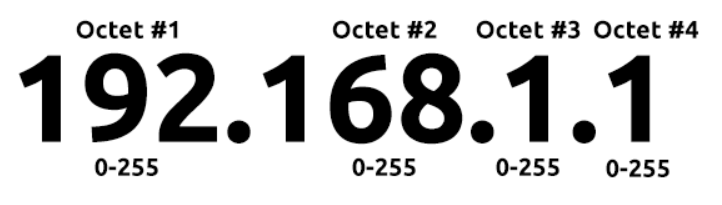Una dirección IP es un conjunto de números que se dividen en cuatro octetos. El valor de cada octeto se resumirá en la dirección IP del dispositivo en la red. Este número se calcula a través de una técnica conocida como direccionamiento IP y división en subredes, pero eso es para otro día. Lo que es importante comprender aquí es que las direcciones IP pueden cambiar de un dispositivo a otro, pero no pueden estar activas simultáneamente más de una vez dentro de la misma red.
Se utiliza una dirección pública para identificar el dispositivo en Internet, mientras que una dirección privada se utiliza para identificar un dispositivo entre otros dispositivos. Tome la tabla y la captura de pantalla a continuación como ejemplo. Aquí tenemos dos dispositivos en una red privada:
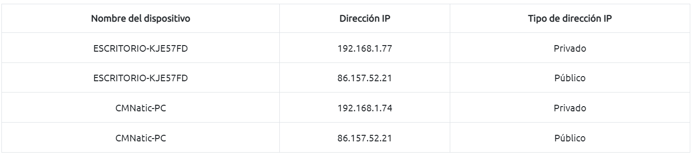Direcciones MAC
Todos los dispositivos en una red tendrán una interfaz de red física, que es una placa de microchip que se encuentra en la placa base del dispositivo. A esta interfaz de red se le asigna una dirección única en la fábrica en la que se construyó, llamada dirección MAC(Media A ccess C ontrol).La dirección MAC es un número hexadecimal de doce caracteres (un sistema de numeración de base dieciséis que se usa en computación para representar números) dividido en dos y separado por dos puntos. Estos dos puntos se consideran separadores. Por ejemplo, *a4:c3:f0:85:ac:2d* . Los primeros seis caracteres representan la empresa que fabricó la interfaz de red y los últimos seis son un número único.
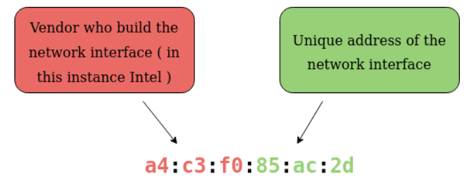
Sin embargo, algo interesante con las direcciones MAC es que se pueden falsificar o "suplantar" en un proceso conocido como suplantación de identidad. Esta suplantación de identidad se produce cuando un dispositivo en red pretende identificarse como otro utilizando su dirección MAC. Cuando esto ocurre, a menudo puede romper los diseños de seguridad mal implementados que asumen que los dispositivos que hablan en una red son confiables. Tome el siguiente escenario: un firewall está configurado para permitir cualquier comunicación hacia y desde la dirección MAC del administrador. Si un dispositivo pretendiera o "suplantara" esta dirección MAC, el cortafuegos ahora pensaría que está recibiendo comunicación del administrador cuando no es así.
Lugares como cafés, cafeterías y hoteles a menudo usan el control de dirección MAC cuando usan su Wi-Fi "Invitado" o "Público".Esta configuración podría ofrecer mejores servicios, es decir, una conexión más rápida por un precio si está dispuesto a pagar la tarifa por dispositivo.
Hacer ping (ICMP)
Ping es una de las herramientas de red más fundamentales disponibles para nosotros. Ping utiliza paquetes ICMP (Protocolo de mensajes de control de Internet) para determinar el rendimiento de una conexión entre dispositivos, por ejemplo, si la conexión existe o es confiable.
El tiempo que tardan los paquetes ICMP en viajar entre dispositivos se mide mediante ping, como en la siguiente captura de pantalla. Esta medición se realiza utilizando el paquete de eco de ICMP y luego la respuesta de eco de ICMP desde el dispositivo de destino.
Los pings se pueden realizar contra dispositivos en una red, como su red doméstica o recursos como sitios web. Esta herramienta se puede usar fácilmente y viene instalada en sistemas operativos (SO) como Linux y Windows. La sintaxis para hacer un ping simple es`ping IP address or website URL` . Veamos esto en acción en la siguiente captura de pantalla.
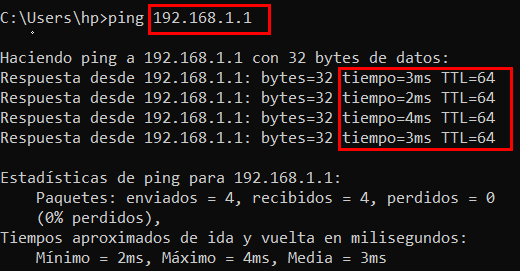Aquí estamos haciendo ping a un dispositivo que tiene la dirección privada de 192.168.1.1 . Ping nos informa que hemos enviado cuatro paquetes ICMP, todos los cuales se recibieron con un tiempo promedio de 4 milisegundos.
Introducción a redes LAN
Topologías de red de área local (LAN)
A lo largo de los años, ha habido experimentación e implementación de varios diseños de red. En referencia a la creación de redes, cuando nos referimos al término "topología", en realidad nos referimos al diseño o aspecto de la red en cuestión. Analicemos las ventajas y desventajas de estas topologías a continuación.
Topología de las estrellas (Star Topology)
La premisa principal de una topología en estrella es que los dispositivos se conectan individualmente a través de un dispositivo de red central, como un conmutador o concentrador. Esta topología es la más común hoy en día debido a su confiabilidad y escalabilidad, a pesar del costo.
Cualquier información enviada a un dispositivo en esta topología se envía a través del dispositivo central al que se conecta. Exploremos algunas de estas ventajas y desventajas de esta topología a continuación:
Debido a que se requiere más cableado y la compra de equipos de red dedicados para esta topología, es más costosa que cualquiera de las otras topologías. Sin embargo, a pesar del costo adicional, esto proporciona algunas ventajas significativas. Por ejemplo, esta topología es de naturaleza mucho más escalable, lo que significa que es muy fácil agregar más dispositivos a medida que aumenta la demanda de la red.
Desafortunadamente, cuanto más escala la red, más mantenimiento se requiere para mantener la red funcional. Esta mayor dependencia del mantenimiento también puede dificultar mucho la resolución de problemas. Además, la topología en estrella todavía es propensa a fallar, aunque reducida. Por ejemplo, si el hardware centralizado que conecta los dispositivos falla, estos dispositivos ya no podrán enviar ni recibir datos. Afortunadamente, estos dispositivos de hardware centralizados suelen ser robustos.
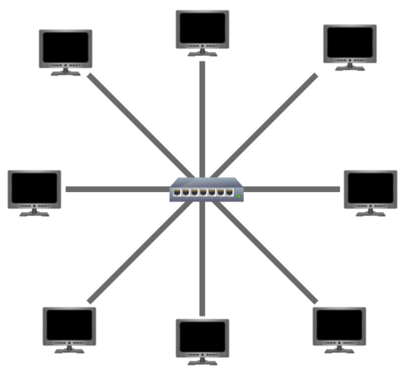Este tipo de conexión se basa en una única conexión que se conoce como cable troncal. Este tipo de topología es similar a la hoja de un árbol en el sentido de que los dispositivos (hojas) surgen de donde están las ramas en este cable.
Debido a que todos los datos destinados a cada dispositivo viajan a lo largo del mismo cable, es muy probable que se vuelvan lentos y se produzcan cuellos de botella si los dispositivos dentro de la topología solicitan datos simultáneamente. Este cuello de botella también resulta en una solución de problemas muy difícil porque rápidamente se vuelve difícil identificar qué dispositivo está experimentando problemas con los datos que viajan por la misma ruta.
Sin embargo, dicho esto, las topologías de bus son una de las topologías más fáciles y rentables de configurar debido a sus gastos, como el cableado o el equipo de red dedicado que se utiliza para conectar estos dispositivos.
Por último, otra desventaja de la topología de bus es que hay poca redundancia en caso de fallas. Esta desventaja se debe a que existe un único punto de falla a lo largo del cable principal. Si este cable se rompiera, los dispositivos ya no podrían recibir ni transmitir datos a lo largo del bus.
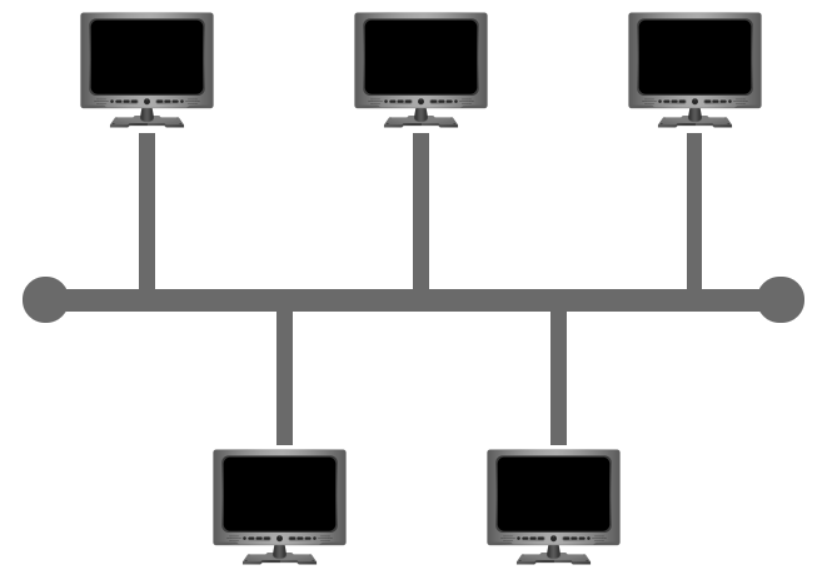Topología de anillo (Ring Topology)
La topología de anillo (también conocida como topología de token) presenta algunas similitudes. Los dispositivos, como las computadoras, se conectan directamente entre sí para formar un bucle, lo que significa que se requiere poco cableado y menos dependencia de hardware dedicado, como dentro de una topología en estrella.
Una topología en anillo funciona mediante el envío de datos a través del bucle hasta que llega al dispositivo de destino, utilizando otros dispositivos a lo largo del bucle para reenviar los datos. Curiosamente, un dispositivo solo enviará datos recibidos de otro dispositivo en esta topología si no tiene ninguno para enviarse a sí mismo. Si el dispositivo tiene datos para enviar, primero enviará sus propios datos antes de enviar datos desde otro dispositivo.
Debido a que solo hay una dirección para que los datos viajen a través de esta topología, es bastante fácil solucionar cualquier falla que surja. Sin embargo, esta es una espada de doble filo porque no es una forma eficiente de que los datos viajen a través de una red, ya que es posible que primero tenga que visitar varios dispositivos antes de llegar al dispositivo deseado.
Por último, las topologías en anillo son menos propensas a los cuellos de botella, como dentro de una topología de bus, ya que grandes cantidades de tráfico no viajan a través de la red en ningún momento. Sin embargo, el diseño de esta topología significa que una falla, como un cable cortado o un dispositivo roto, provocará la ruptura de toda la red.
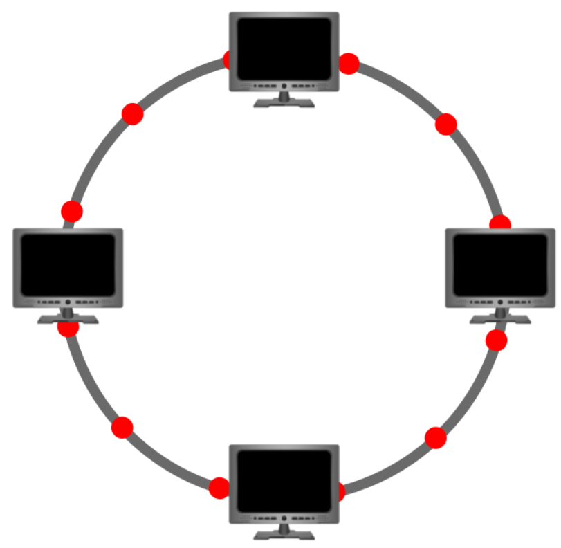¿Qué es un Switch?
Los conmutadores son dispositivos dedicados dentro de una red que están diseñados para agregar varios otros dispositivos, como computadoras, impresoras o cualquier otro dispositivo con capacidad de red que utilice Ethernet. Estos diversos dispositivos se conectan al puerto de un conmutador. Los conmutadores generalmente se encuentran en redes más grandes, como empresas, escuelas o redes de tamaño similar, donde hay muchos dispositivos para conectarse a la red. Los conmutadores pueden conectar una gran cantidad de dispositivos al tener puertos de 4, 8, 16, 24, 32 y 64 para que se conecten los dispositivos.
Los switches son mucho más eficientes que su contraparte menor (hubs/repetidores). Los conmutadores realizan un seguimiento de qué dispositivo está conectado a qué puerto. De esta manera, cuando reciben un paquete, en lugar de repetir ese paquete en cada puerto como lo haría un concentrador, simplemente lo envía al destino previsto, lo que reduce el tráfico de red.
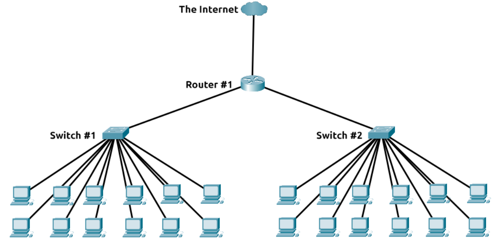Tanto los conmutadores como los enrutadores se pueden conectar entre sí. La capacidad de hacer esto aumenta la redundancia (la confiabilidad) de una red al agregar múltiples rutas para que tomen los datos. Si un camino falla, se puede usar otro. Si bien esto puede reducir el rendimiento general de una red porque los paquetes tardan más en viajar, no hay tiempo de inactividad, un pequeño precio a pagar considerando la alternativa.
¿Qué es un Router?
El trabajo de un enrutador es conectar redes y pasar datos entre ellas. Lo hace mediante el uso de enrutamiento (¡de ahí el nombre de enrutador!).
El enrutamiento es la etiqueta que se le da al proceso de datos que viajan a través de las redes. El enrutamiento implica crear una ruta entre redes para que estos datos puedan entregarse con éxito.
El enrutamiento es útil cuando los dispositivos están conectados por muchas rutas, como en el diagrama de ejemplo a continuación.
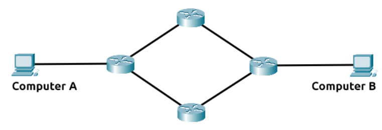Introducción a la división en subredes (Subnetting)
Como hemos discutido anteriormente a lo largo del módulo hasta ahora, las redes se pueden encontrar en todas las formas y tamaños, desde pequeñas hasta grandes. División en subredes es el término que se le da a la división de una red en redes más pequeñas y en miniatura dentro de sí misma. Piense en ello como cortar un pastel para sus amigos. Solo hay una cierta cantidad de pastel para todos, pero todos quieren un pedazo. Dividir en subredes es decidir quién obtiene qué porción y reservar esa porción de este pastel metafórico.
Tome un negocio, por ejemplo; Dispondrás de diferentes departamentos como:
- Contabilidad
- Finanzas
- Recursos humanos
Una dirección IP se compone de cuatro secciones llamadas octetos. Lo mismo ocurre con una máscara de subred que también se representa como un número de cuatro bytes (32 bits), que van de 0 a 255 (0-255).
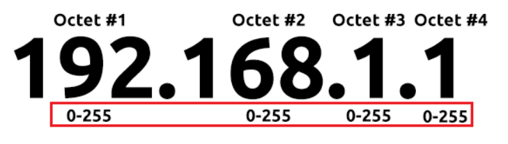Las subredes usan direcciones IP de tres maneras diferentes:
- Identificar la dirección de red
- Identificar la dirección del host
- Identificar la puerta de enlace predeterminada
Dividamos estos tres para comprender sus propósitos en la siguiente tabla:
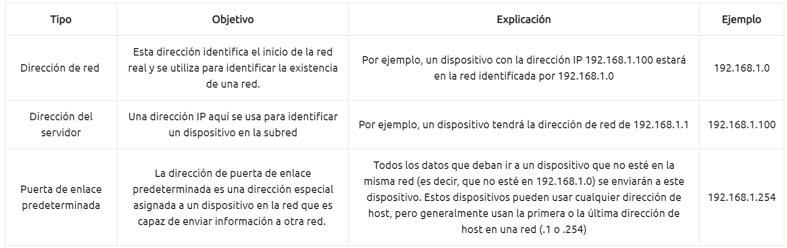Ahora, en redes pequeñas como las domésticas, estará en una subred, ya que es poco probable que necesite más de 254 dispositivos conectados a la vez. Sin embargo, lugares como empresas y oficinas tendrán muchos más de estos dispositivos (PC, impresoras, cámaras y sensores), donde se realiza la división en subredes.
La división en subredes proporciona una variedad de beneficios, que incluyen:
- Eficiencia
- Seguridad
- Control total
El protocolo ARP
Recordando de nuestras tareas anteriores que los dispositivos pueden tener dos identificadores: una dirección MAC y una dirección IP, el protocolo ARP o protocolo de resolución de direcciones para abreviar, es la tecnología que se encarga de permitir que los dispositivos se identifiquen en una red .
Simplemente, el protocolo ARP permite que un dispositivo asocie su dirección MAC con una dirección IP en la red. Cada dispositivo en una red mantendrá un registro de las direcciones MAC asociadas con otros dispositivos.
Cuando los dispositivos deseen comunicarse con otro, enviarán una transmisión a toda la red en busca del dispositivo específico. Los dispositivos pueden usar el protocolo ARP para encontrar la dirección MAC (y por lo tanto el identificador físico) de un dispositivo para la comunicación.
¿Cómo funciona ARP?
Cada dispositivo dentro de una red tiene un registro para almacenar información, que se denomina caché. En el contexto del protocolo ARP , este caché almacena los identificadores de otros dispositivos en la red.
Para mapear estos dos identificadores juntos (dirección IP y dirección MAC), el protocolo ARP envía dos tipos de mensajes:
- Solicitud ARP
- Respuesta ARP
Cuando se envía una solicitud ARP , se transmite un mensaje a todos los demás dispositivos encontrados en una red por el dispositivo, preguntando si la dirección MAC del dispositivo coincide o no con la dirección IP solicitada.Si el dispositivo tiene la dirección IP solicitada, se devuelve una respuesta ARP al dispositivo inicial para confirmarlo.El dispositivo inicial ahora recordará esto y lo almacenará dentro de su caché (una entrada ARP).
Este proceso se ilustra en el siguiente diagrama:
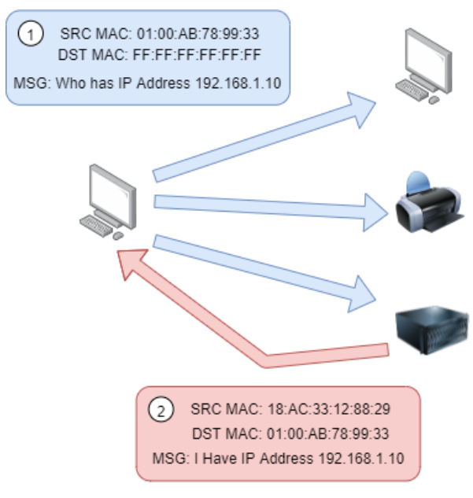El protocolo DHCP
Las direcciones IP se pueden asignar de forma manual, introduciéndolas físicamente en un dispositivo, o de forma automática y más comúnmente mediante el uso de un servidor DHCP (Dynamic Host Configuration Protocol).Cuando un dispositivo se conecta a una red, si aún no se le ha asignado manualmente una dirección IP, envía una solicitud (DHCP Discover) para ver si hay algún servidor DHCP en la red. Luego, el servidor DHCP responde con una dirección IP que el dispositivo podría usar (oferta de DHCP).Luego, el dispositivo envía una respuesta confirmando que desea la dirección IP ofrecida (solicitud DHCP) y, por último, el servidor DHCP envía una respuesta reconociendo que esto se ha completado y que el dispositivo puede comenzar a usar la dirección IP (DHCP ACK).
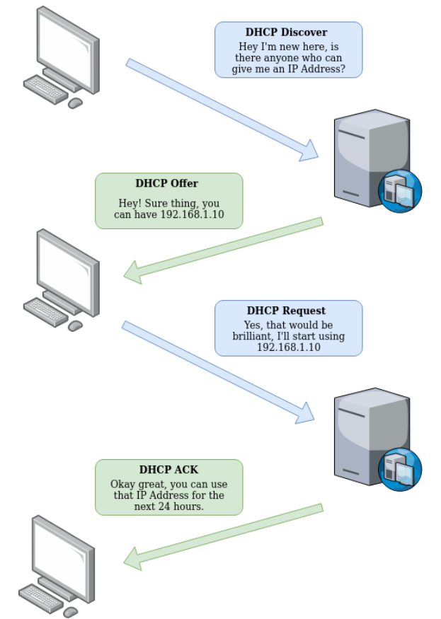